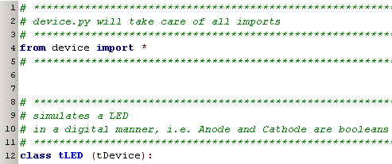
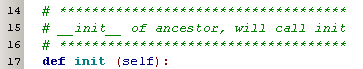
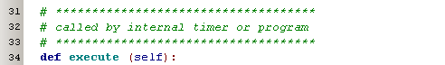
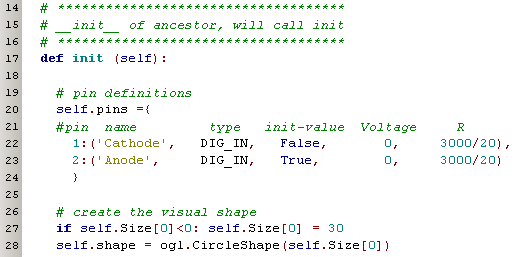
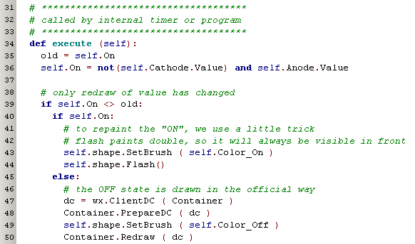
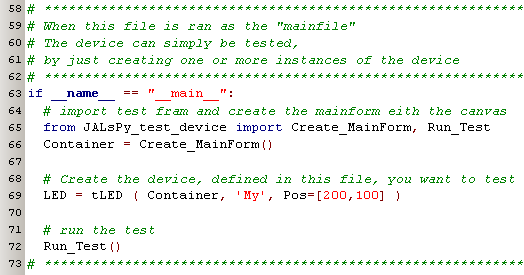
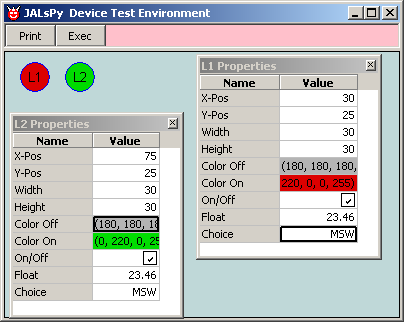

june 2007
JALsPy LED Devices
Introduction
On this page we show how easy it is to create a new component for the JAL functional simulator. As an example we take a LED. The first choice we have to make, is what kind of mode we want to simulate the LED, we can create a component in one of the following modes:
For a LED, the virtual mode is not very convenient. At this stage of the development, the analog mode only lives in my brain, so let's design a LED in the digital mode.
The first part is equal for all components, be sure everything is included and derive the new device from the base class.

line 4: importing of "device" will ensure everything needed is available
line 12: define (not create) a new object, called "tLED", derived from "tDevice"
Now we have to define 2 procedures within this new class, with predefined names;


In Object Oriented Programming (OOP), these procedures are called "methods" of the class.
These two methods should always be available and should have predefined names so the main program can always use them. The first procedure "init" is called during creation of an instance (the real variable) of the class and the procedure "execute" is called to update the state of the device, which in case of a LED is when one or both of the connections changes.
Let's take a closer look at the "init" method.

Line 20 .. 23: the definitions of the IO-pins. For each pin we start with a name, we define the type of IO-pin and the start value. The next 2 values Voltage and R (Resistance), are the Thévenin definition of a linear 2-pole component. In fact these two constants are only needed for analog simulation, so strictly speaking we could just leave them out. Thévenin stated that each linear 2-pole can be replaced by an ideal Voltage-source in series with a resistor. As a LED is a passive element, the Voltage is of course 0. Although a LED is highly not-linear, for simplicity we assume that it draws a current of 20 mA at 3V, so that explains the value of the R-constant.
line 27,28: define the shape for the LED component. Here we've chozen a simple circle with a diameter of at least 30 pnt.

And that's all there is !!
No there's more, at least if you want it / need it / ...
Multi-level device
.... TODO ....
Testing the device
And here we are going to use another beautiful construction of Python, when you try to run a library file as the main file, you run a dedicated part of the code in the library file (usually shown at the bottom of the library file). So with adding just 1 line of code (line 69 in the picture below) we can fully test the component and especially it's GUI. The rest of the code shown in the figure is identical for each component.

When you now run the library file, you get a small canvas (which is exactly the same canvas as in JALsPy !!) and can do small tests.
